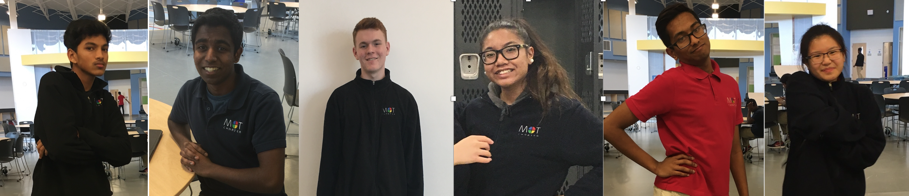

Overview of the National Technology Student Association
Technology Student Association (TSA) hosts over 60 National Events each year for high school students to participate in. Events hosts by
the TSA organization helps high school students show of their skills in technology, mathematics, science, and engineering. Students who are part
of TSA also gain leadership skills, lifetime friendships, and an unforgettable experience. Events range from public speaking and debates to dragster design
and structural engineering. Those are some examples of the extensive range of TSA events members can participate in.
Technology Student Association Mission Statement
"The Technology Student Association enhances personal development, leadership, and career opportunities in STEM, whereby members apply and integrate these concepts through intracurricular activities,
competitions, and related programs."
The Technology Student Association's Motto:
"Learning to lead in a technical world."
The Technology Student Association's Creed:
"I believe that Technology Education holds an important place in my life in the technical world. I believe there is a need for the development of good attitudes concerning work, tools, materials, experimentation, and processes of industry. Guided by my teachers, artisans from industry, and my own initiative, I will strive to do my best in making my school, community, state, and nation better places in which to live. I will accept the responsibilities that are mine. I will accept the theories that are supported by proper evidence. I will explore on my own for safer, more effective methods of working and living. I will strive to develop a cooperative attitude and will exercise tact and respect for other individuals. Through the work of my hands and mind, I will express my ideas to the best of my ability. I will make it my goal to do better each day the task before me, and to be steadfast in my belief in my God, and my fellow Americans."
MOT Charter TSA Officers

Officers- Left to Right
Vishnusundar Somersundaram: President, Kiran Manisubbu: Secretary, Nicholas Rouwhorst: Vise President, April Dy-Reyes: Sergeant-At-Arms, Joshua Philip: Treasurer,
Abigail Malazarte: Reporter